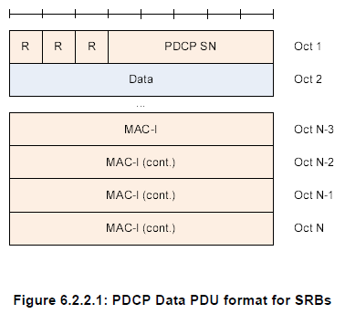

PDCP Home : www.sharetechnote.com
I would say PDCP is a kind of interface between inside world and outside world. By "Inside World", I roughly mean "Network Access Network(mainly eNodeB) and Controller for eNodeB", "Network Emulator Hardware and internal firmware", and "Mobile Device (UE)".
The data coming into the box (or UE) first go through PDCP and then gets into RLC. Data waiting in RLC trying to go out to the outside world has to go through PDCP to outer world.
As in other layers, let's start looking into the diagram from 3GPP specification (TS 36.323). The first diagram is as follows.
What are we supposed to do ?
Yes, Verbalize it (describe it).
In the following diagram, you see that PDCP is directly connected to RLC Layer (RLC UM and RLC AM).
Do you find anything strange or missing ?
Yes, PDCP has no connection to RLC TM mode, meaning RLC TM mode data does not go through PDCP.

Following Diagram would give you more detailed information about PDCP Operation. Of course, all of the these functionality is listed in the 3GPP specification, but it would not become yours unless you combine these diagrams and the descriptions in the specification.
Now let's follow through the diagram from left side.
i) Data coming into PDCP first go through "Sequence Numbering" Procedure. It means that PDCP add "Sequence Number" to each of incoming data block. Once it add 'Sequence Number', it has to manage the number. On reciever side, we can figure out many things like "Is the data getting delivered in order ? Is there any duplicate data ? How can I combine the multiple chunks of data block into an original big chunk data ?"
ii) Then it goes through Header Compression. But it says "this applies only to U-plane data". It means that Signaling Message does not go through this Header Compression. Even though not shown in this diagram, we can disable Header Compression even for U-plane data (e.g, IP Packet data).
iii) From here we see two paths, one through "Integrity/Ciphering" and the other one directly goes to the last step. Integrity Protection applies only to C-Plane data (C-Plane data means RRC/NAS message, i.e DCCH data, not DTCH data). Again you can disable "Integrity Protection" setp by applying IEA0 to this process.
iv) Then it goes to Ciphering process. Ciphering applies both C-Plane and U-Plane Data. Ciphering process can also be disabled by applying EEA0.
v) Eventually at the last step of transmission PDCP, a header is added and get out of PDCP layer.
The other side (right side, receiving side) is simply reverse process of transmission process. So I will leave this to the readers to interpret the diagram.

As in MAC PDU, RLC PDU.. PDCP also has it's own data structure and again you would never understand this structure in detail unless you get some real data and anlayze the data manually. But putting all together the following diagram (from 3GPP 36.323) would guide you to decode PDCP Data.
The only key question when you try to decode real PDCP data would be "Which diagram I have to use to decode this data ?". Only practice would give you the quick answer.
First Let's briefly look at the data structure. Following is the data structure for SRB. It means all the C plane data (RRC/NAS message) use this data structure. As you see, the first three bits are reserved. and next comes 5 bits PDCP SN(Sequence Number) and at the end of the block 4 bytes of MAC-I data is attached.

Following two diagram shows the PDCP structure for DRB. It means U-Plane data, DTCH data is using this kind of data structure. The only differences between these two data type is the size of SN (Sequence Number). One is using 7 bit and the other is 12 bits.
Comparing to SRB PDCP structure, you would find two differences. D/C bit at the first bit of the structure. This tells you whether the PDCP data is for user data or PDCP control data (This control data does not mean C-Plane data. It is control data being used in PDCP layer). And the other difference is that you do not have the MAC-I at the end of the data. MAC-I is the special information for Integrity protection. Do you remember Integrity Protection applies only to C-Plane data, not to U-Plane data ?
Following two data structure is a kind of PDCP layer control packet.

All of the following tables shows the meaning of each data field shown in the diagrams we saw above. You will refer to this table a lot when you try to decode PDCP data yourself. Otherwise, you would read now and forget as your click to another page.
My perception of any process is "a black box that convert a set of inputs into a set of output". So for any process, I usually tries to define what is the inputs and out is the final outputs.. and then try to find the all of the steps one by one to convert the input into the outputs.
If I define LTE Integrity Protection Procedure with this logic, it would be "a process that convert 'K' value from USIM into PDCP MAC-I and NAS MAC(Message Authentication Code)". Describing this process with illustration would be as follows. Just try to go through this illustration whenever you have chance and try to have your own idea first.
The process described here apply only to C-Plane data. (Refer to 33.401 for the detailed description of each of the steps).